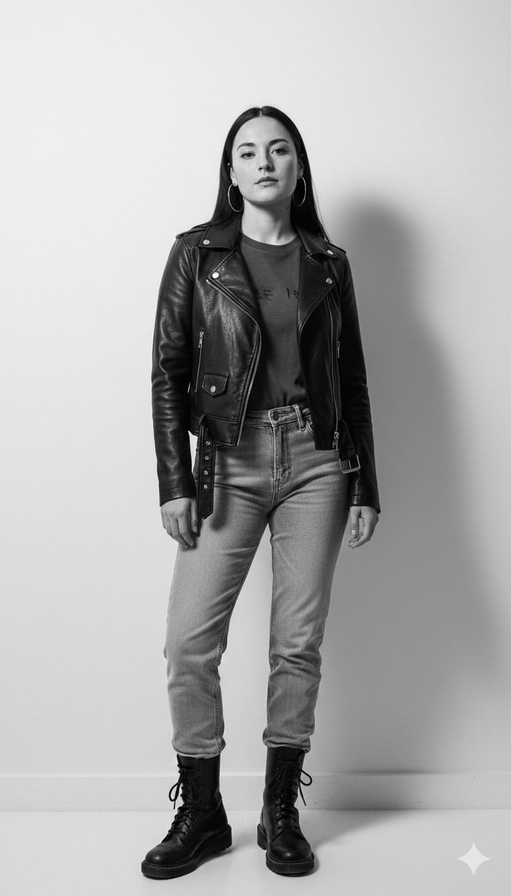

8+ años entre fintech, e-commerce, gaming y más. Convierto la complejidad en claridad — diseñando experiencias simples, pensadas y que realmente funcionan.

Si estás construyendo algo interesante, escríbeme. Siempre hay espacio para una buena conversación.